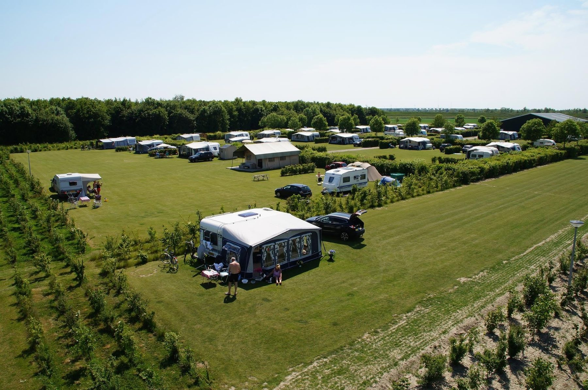
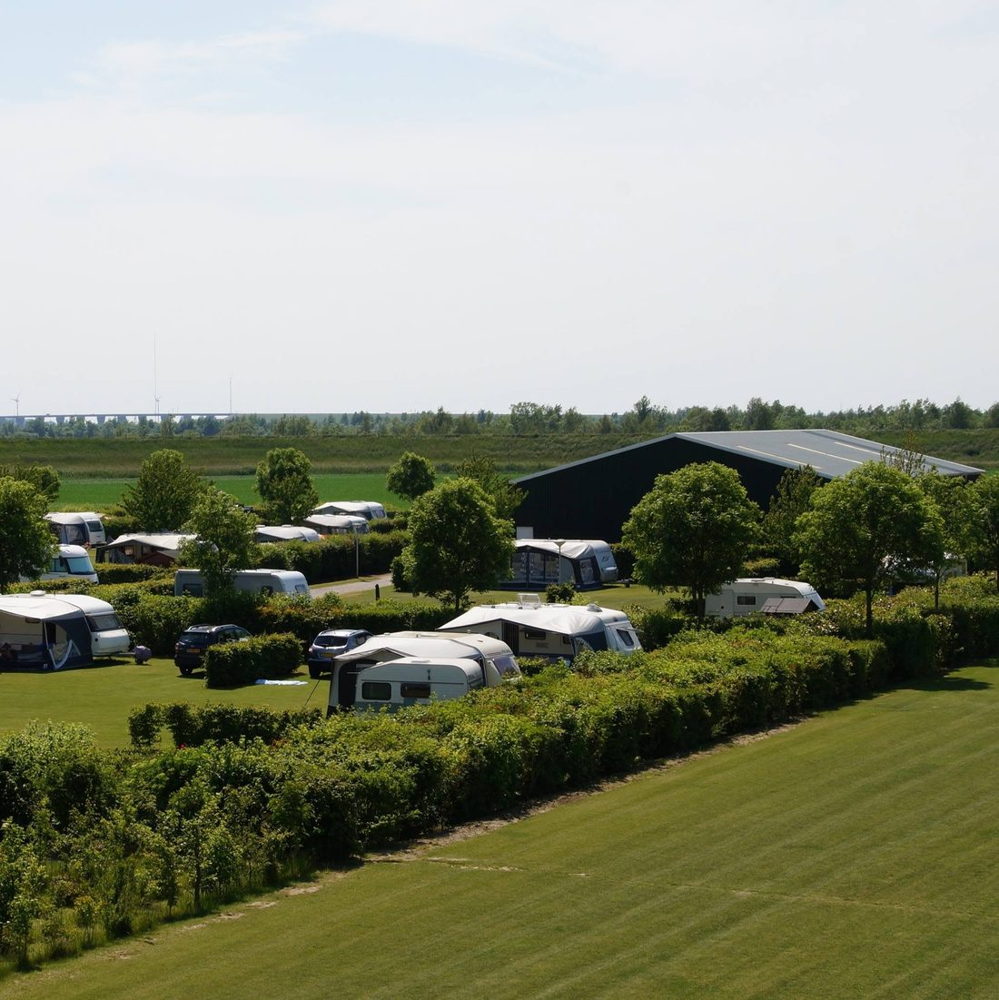
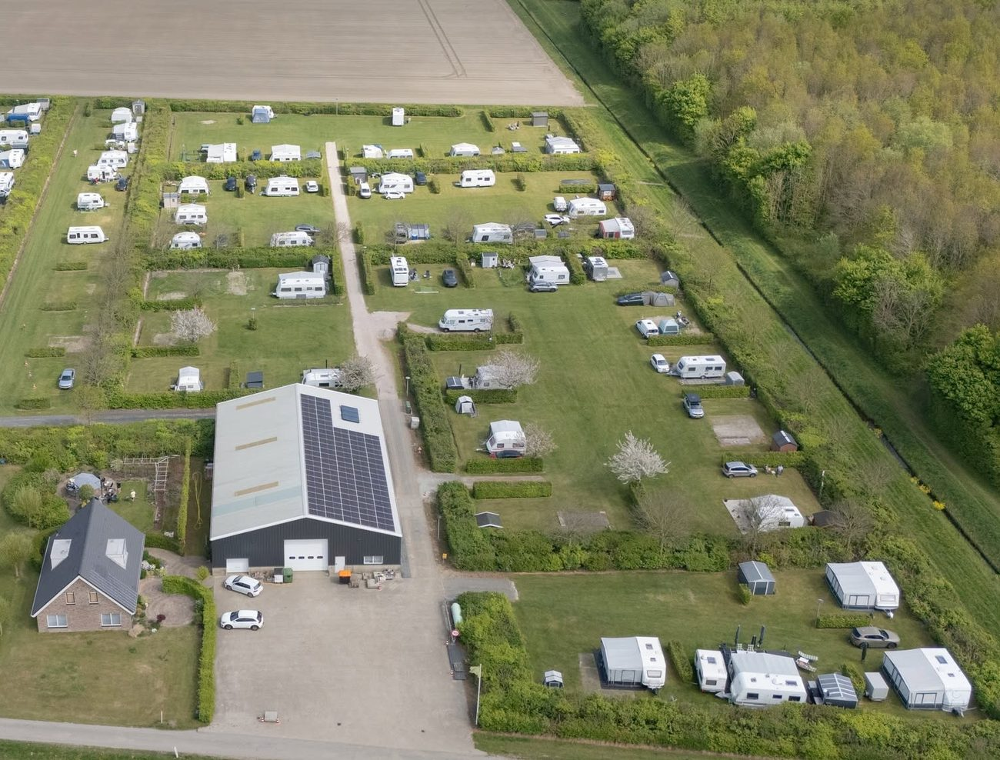
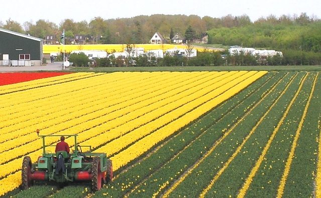

Rust, ruimte en privacy op Goeree-Overflakkee
Een kleinschalige, groene camping bij Oude-Tonge, met plaatsen van zo'n 16 meter breed en luxe sanitair. Strand Grevelingendam ligt om de hoek.

Geen plekje, maar een eigen kavel
Onze plaatsen zijn ongeveer 16 meter breed en 10 meter diep, gescheiden door groen en met een puike grasmat. Elke plaats heeft een eigen tappunt voor water en een stroomaansluiting.
De Krammer is er voor wie comfort, rust, privacy en kleinschaligheid waardeert. Opgepast: heeft u wel genoeg windschermen?
- Water en stroom bij de plaats
- Douchen inbegrepen
- Wifi op de camping
- Honden welkom

Sanitair zoals u het thuis gewend bent
In onze centraal verwarmde sanitairruimte met vloerverwarming vindt u echte badkamers met douche en (kinder)toilet, ruim genoeg voor ouder en kind samen. Geen trespa schotjes, maar betegelde muren en vloeren. Voor de allerkleinsten is er een babybad.
En we proberen het milieu te ontzien: de stroom komt van ons eigen dak.
Dit zeggen onze gasten
Veel gasten komen jaar na jaar terug. Een paar berichten uit ons gastenboek.
"We hebben 3 heerlijke weken gehad. Een groot compliment voor het gras: als een biljartlaken. In de Arena zijn ze er jaloers op. We komen zeker terug op deze camping waar je geen plaats maar een weiland tot je beschikking hebt."
"Een fijne, schone, bijzonder ruime en rustige plek, waar we erg genoten en ons kleintje van 8 maanden heerlijk over het mooie gazon kon kruipen. Erg fijn dat je een eigen kraantje en stroompunt hebt en het sanitair is ruim en schoon."
"Wat een rust, wat een ruimte! Het waren enkele heerlijke dagen. Complimenten voor het prefect onderhouden terrein en de nette en schone sanitair."
"Kleine maar fijne camping. Netjes, zeer ruime plaatsen, mooie grasmat. Wij gaan zeker nog terug."
"Niet eerder hebben wij een zo rustige, nette en goed uitgeruste minicamping gehad. De rust, de privacy en de gemoedelijke / vriendelijke omgang door jullie met de gasten spreken ons erg aan."
"Prima sanitair en gigantische, goed onderhouden plaatsen. Vooral de omgeving sprak ons (vogelaars) erg aan. Wij spotten in die korte periode 48 verschillende vogels, waaronder Lepelaar, Zwarte Ruiter, Bruine Kiekendief."
Uit het gastenboek van Camping De Krammer. Op Eurocampings (ACSI) gemiddeld een 8,9 (3 beoordelingen).
Kust, polder en natuur om de hoek
Oude-Tonge ligt zo'n 30 autominuten ten zuiden van Rotterdam. Voor fietsers, wandelaars en watersporters is er volop te beleven.
Strand Grevelingendam
Zwemmen, duiken, vissen, zeilen en de bekende surfspot voor wind- en kitesurfers. Het water begint ondiep, fijn voor kinderen. Gratis parkeren.
Natuurgebied de Krammer
Een zoetwatermeer van honderden hectares waar het krioelt van de watervogels. Een aanrader voor vogelaars.
Recreatiebos en MTB-parcours
Prima voor een blokje om, en voor mountainbikers is er een parcours uitgezet.
Fietsen door de polders
Knooppuntroutes over binnen- en buitendijken, met in het voorjaar tulpenvelden rond de camping.
Haven, Kaai en Dabbehof
Terrassen aan de vernieuwde Kaai en een winkelcentrum met supermarkten, bakker en slager. Overal gratis parkeren.
De Omloop van Goeree-Overflakkee
Een wandeltocht van 110 km in 24 uur rond het eiland, vlak langs Camping De Krammer.
Welkom bij Anton en Nel
Sinds 2004 runnen wij, familie Korteweg, Camping De Krammer aan de Suisenweg. Daarnaast hebben we een akker- en tuinbouwbedrijfje, dus u kampeert echt tussen de polders.
We houden de camping bewust klein. Zoekt u disco en drukte, dan kunt u beter uitkijken naar een andere camping.
"Camping De Krammer richt zich op mensen die comfort, rust, privacy en kleinschaligheid weten te waarderen."Anton en Nel Korteweg

Reserveren
Geef uw data door en waarmee u komt. U krijgt persoonlijk antwoord, meestal binnen een dag.
Liever even bellen?
Anton en Nel helpen u graag verder.
3255 NA Oude-TongeOpen 1 april t/m 31 oktober